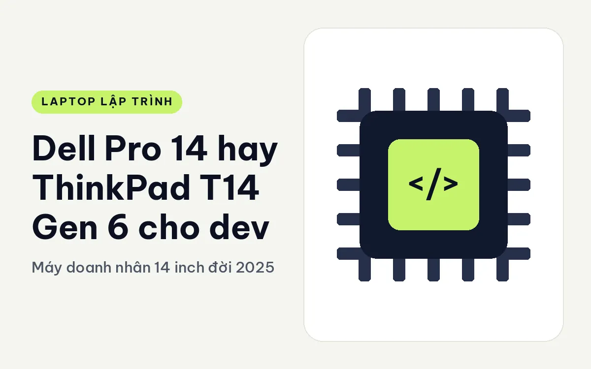
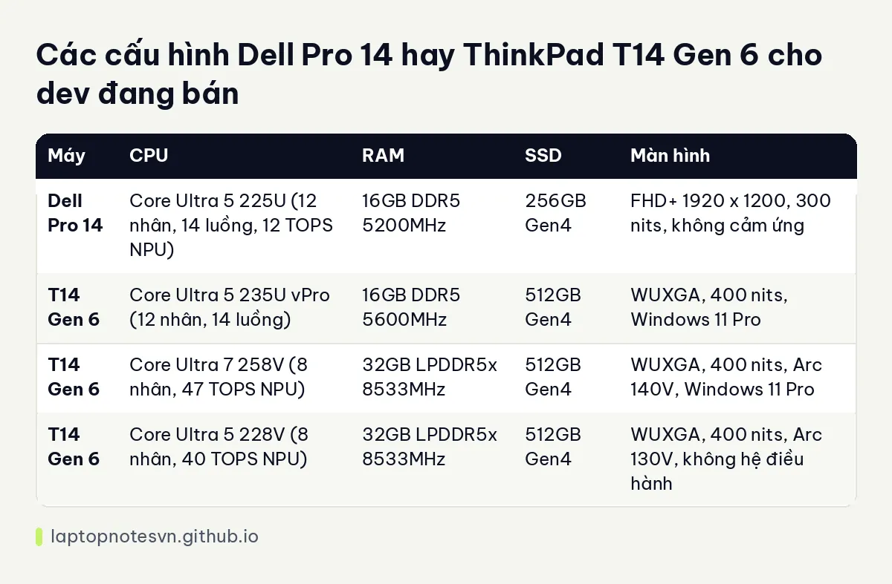

Dell Pro 14 hay ThinkPad T14 Gen 6 cho dev - Máy doanh nhân 14 inch đời 2025

Dell Pro 14 là cái tên mới thay cho dòng Latitude. ThinkPad T14 Gen 6 là đời trước của T14 Gen 7, giờ vẫn còn hàng và có bản cấu hình khá hấp dẫn. Hai máy hợp với người cần chiếc laptop làm việc bền, không màu mè. Câu hỏi của dev khi đặt chúng cạnh nhau thường là: RAM bao nhiêu, bàn phím ra sao, và bản nào đáng mua.
Bên Dell là Dell Pro 14 PC14250.
Bên Lenovo là ThinkPad T14 Gen 6.
Thân máy và trọng lượng của Dell Pro 14 và ThinkPad T14 Gen 6
Dell Pro 14 nặng 1,35 kg, kích thước 313,7 x 225,3 mm, dày 18,89 đến 20,37 mm, pin 55Wh. T14 Gen 6 nặng 1,53 kg, pin khoảng 52,5Wh. Dell nhẹ hơn 180 gam và pin nhỉnh hơn một chút, nên xét về di chuyển thì Dell có lợi thế rõ.
Cổng của Dell Pro 14 gồm Thunderbolt 4, HDMI 2.1 và RJ45. T14 Gen 6 là dòng ThinkPad nên cổng thường đầy đủ, nhưng dữ liệu cấu hình rút gọn không liệt kê chi tiết. Nếu cổng quan trọng với bạn, hãy xem thông số chính thức của hãng.
Điều đáng nói về nâng cấp: T14 Gen 6 dùng RAM không nâng cấp được theo mô tả, nghĩa là bạn chốt dung lượng khi mua. Đây là điểm khác với T14 Gen 7 dùng LPCAMM2. Bạn có thể xem so sánh hai đời T14 ở bài T14 Gen 7 hay Gen 6 cho dev.
Các bản cấu hình Dell Pro 14 và ThinkPad T14 Gen 6 đang có
| Máy | CPU | RAM | SSD | Màn hình |
|---|---|---|---|---|
| Dell Pro 14 | Core Ultra 5 225U (12 nhân, 14 luồng, 12 TOPS NPU) | 16GB DDR5 5200MHz | 256GB Gen4 | FHD+ 1920 x 1200, 300 nits, không cảm ứng |
| T14 Gen 6 | Core Ultra 5 235U vPro (12 nhân, 14 luồng) | 16GB DDR5 5600MHz | 512GB Gen4 | WUXGA, 400 nits, Windows 11 Pro |
| T14 Gen 6 | Core Ultra 7 258V (8 nhân, 47 TOPS NPU) | 32GB LPDDR5x 8533MHz | 512GB Gen4 | WUXGA, 400 nits, Arc 140V, Windows 11 Pro |
| T14 Gen 6 | Core Ultra 5 228V (8 nhân, 40 TOPS NPU) | 32GB LPDDR5x 8533MHz | 512GB Gen4 | WUXGA, 400 nits, Arc 130V, không hệ điều hành |
Dell Pro 14 chỉ có một bản với 16GB RAM và SSD 256GB. Với dev, 256GB sẽ nhanh đầy vì mỗi image Docker, mỗi bộ SDK đều chiếm vài gigabyte. T14 Gen 6 có ba bản, trong đó hai bản dòng V với 32GB RAM. Chip dòng V dùng đồ họa Arc 140V hoặc 130V mạnh hơn đồ họa của dòng U, hợp ai làm việc có phần đồ họa hay chạy suy luận nhẹ.

Khoảng cách RAM là điểm mấu chốt. Bản 32GB của T14 Gen 6 phù hợp với dev chạy nhiều container cùng IDE, còn 16GB của Dell Pro 14 phù hợp với dev web đơn giản. Bạn có thể đọc chi tiết cách tính ở bài lập trình viên cần bao nhiêu RAM.
Dell Pro 14 hợp việc gì, ThinkPad T14 Gen 6 hợp việc gì
- Web frontend, Node.js, script: Dell Pro 14 đủ dùng, nhẹ hơn và ít tốn hơn.
- Backend nhiều service, Docker: T14 Gen 6 bản 32GB tránh được chuyện thiếu RAM.
- Dev thường xuyên họp trực tuyến, ghi hình: T14 Gen 6 màn 400 nits dễ nhìn hơn 300 nits của Dell.
- Dev dùng Linux: bản T14 Gen 6 không hệ điều hành tiết kiệm bản quyền.
Chuyện bảo hành và bản quyền
Hai bản T14 Gen 6 dòng V ghi bảo hành 36 tháng, còn bản dòng U ghi 12 tháng. Chênh lệch này đáng cân nhắc khi bạn chọn bản. Nếu máy là công cụ kiếm sống, bảo hành dài hơn có giá trị thật. Dữ liệu Dell Pro 14 không ghi thời hạn bảo hành.
Cách đọc tên chip để khỏi mua nhầm
Tên chip trong bảng dễ gây rối. Core Ultra 5 225U và 235U thuộc dòng U, nhiều nhân nhưng tiết kiệm điện, NPU 12 TOPS ở bản 225U. Core Ultra 7 258V và Core Ultra 5 228V thuộc dòng V, chỉ 8 nhân nhưng có NPU 47 và 40 TOPS cùng đồ họa Arc 140V hoặc 130V, RAM LPDDR5x gắn liền trên chip.
Nghĩa là con số 12 nhân không tự động mạnh hơn 8 nhân. Với việc biên dịch nặng và chạy nhiều tiến trình song song, dòng U có thể có lợi. Với việc cần đồ họa tích hợp và tiết kiệm điện, dòng V có lợi. Nếu công việc chính của bạn là soạn code, chạy test và dùng trình duyệt, cả hai đều đủ nhanh.
Điều đáng cân nhắc hơn là RAM. Bản T14 Gen 6 dòng V có sẵn 32GB nhưng không nâng được, còn bản dòng U 16GB cũng không nâng được theo mô tả. Chọn một lần cho đúng sẽ ít hối tiếc hơn.
Chốt lại giữa Dell Pro 14 và ThinkPad T14 Gen 6
Chọn Dell Pro 14 nếu bạn cần máy nhẹ, có RJ45 và Thunderbolt 4, công việc nhẹ và chấp nhận 16GB RAM. Nên hỏi thêm cửa hàng về khả năng nâng cấp SSD 256GB. Ghi chú riêng ở Dell Pro 14 cho lập trình.
Chọn T14 Gen 6 bản 32GB nếu bạn là dev chạy Docker, cần bàn phím ThinkPad và bảo hành dài. Chấp nhận nặng hơn và RAM không nâng cấp.
Cuối cùng, nếu ngân sách đủ, hãy so thêm với T14 Gen 7, vì nó cho phép thay RAM sau này.
Đăng ngày 09/11/2026